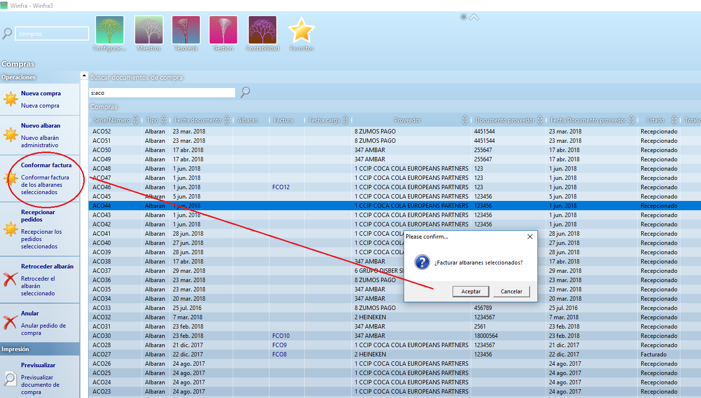
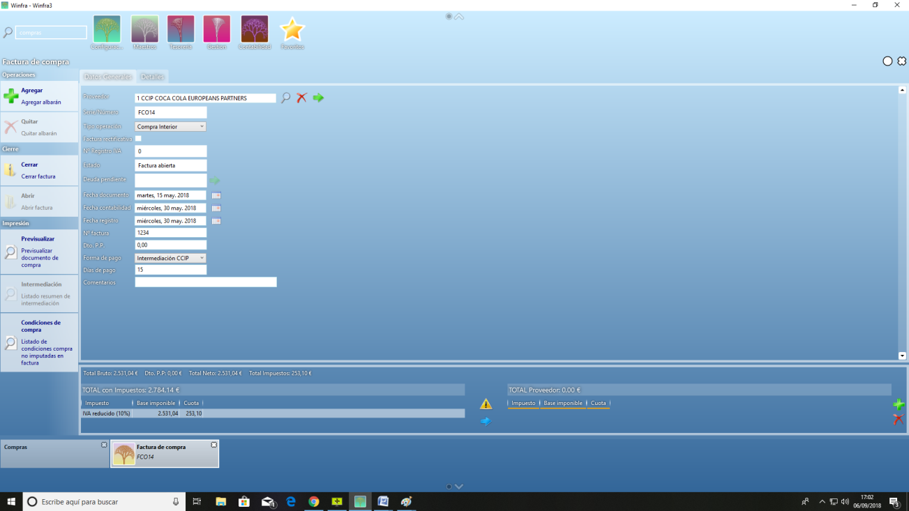

REGISTRO FACTURAS DE COMPRA¶
Después de haber recepcionado el pedido podremos registrar la factura del proveedor. Iremos a compras y en el buscador pondremos s:ACO(serie), nos tenemos que fijar en que la primera columna sean todo ACO para asegurarnos de que estamos haciendo lo correcto. A continuación seleccionamos los albaranes que queremos facturar y le damos a conformar factura.

Nos pregunta si queremos facturar los albaranes seleccionados, le decimos que si.
